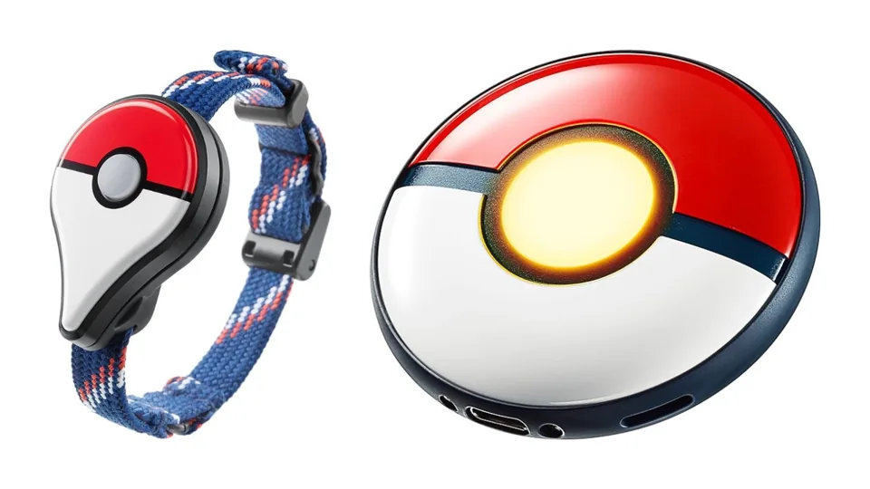

Quais os melhores Celulares e Acessórios para virar um mestre Pokémon em Pokémon GO?
por Luã Souza - 04/02/2024
Apesar de ter sido lançado em 2016, o jogo Pokémon GO ainda conquista diversos jogadores por conta da possibilidade de ser jogado em inúmeros celulares e, com isso, permitir que diversos fãs da franquia tornem-se verdadeiros mestres Pokémon. Ao criar a própria conta, o usuário deve escolher entre um dos três times representados pelas aves lendárias de Kanto, Articuno, Zapdos ou Moltres. Além disso, também é possível decidir qual será o companheiro nessa aventura, representado pelos iniciais Charmander, Bulbassauro e Squirtle.
Porém, uma preocupação constante de quem joga Pokémon GO é a possibilidade de sofrer com furtos, assaltos ou roubos durante um momento descontraído de captura de Pokémons e as famosas Poképaradas, que são essenciais para conseguir itens dentro do jogo.
Por isso, o PokéNews Network trouxe, no texto abaixo, os melhores acessórios e indicações de celulares para os jogadores de Pokémon GO conseguirem aproveitar ao máximo do que o jogo pode oferecer. Os dispositivos em destaque podem ser configurados dentro do próprio Pokémon GO e, abaixo, todas as vantagens e desvantagens entre os modelos estão em evidência.
Como funcionam os acessórios?
Basicamente, tanto a pulseira do Pokémon Go Plus como o acessório Pokémon GO Plus + servem para que o jogador consiga capturar pokémons sem a necessidade de usar o próprio aparelho celular. No caso de pessoas que transitam por lugares muito movimentados ao longo do dia, esses produtos são ótimas alternativas para evitar furtos, roubos ou assaltos de celulares enquanto o treinador joga Pokémon Go.
A diferença de um para outro é que o Pokémon GO Plus não possui a possibilidade de ser recarregado via cabo USB Tipo C. Para continuar o seu uso, é necessário comprar baterias características de relógio para usá-lo continuamente. Agora, o Pokémon GO Plus + tem uma vantagem que é a possibilidade de ser recarregado com o auxílio do cabo USB Tipo C e, além disso, ele possui sincronia com o aplicativo Pokémon Sleep, que pode ser usado para monitorar o sono do usuário e produzir relatórios para cuidar melhor da saúde.
Uma diferença extremamente importante de se destacar é que enquanto o Pokémon GO Plus possui suporte apenas para capturas de Pokémon com Pokébolas, o Pokémon GO Plus+ permite ao usuário configurar as tentativas de captura automática com outras pokébolas, como Great Ball e Ultra Ball.
Samsung Galaxy A54
O Samsung Galaxy A54 é um ótimo celular para jogar Pokémon GO graças ao seu design portátil, tela com taxa de atualização de 120Hz e processamento ultrarrápido oferecido pelo processador octa-core para que a transição entre jogos e outros aplicativos seja suave. Além disso, a bateria de 5.000mAh do Galaxy A54 5G consegue manter o uso do telefone por 2 dias.
iPhone 13 Mini
Com um design portátil e processamento ultrarrápido característico do sistema iOS, o iPhone 13 Mini é um ótimo dispositivo para jogar Pokémon GO. Sua tela de 60Hz aliada ao processamento do chip biônico A15 também consegue entregar uma transição suave entre os mais diversos aplicativos e evitar travamentos durante as sessões de jogatina no celular.